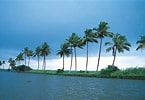
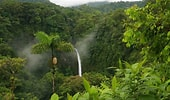
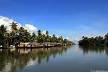
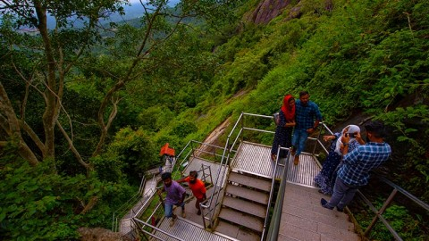
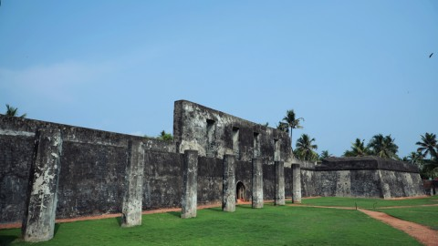
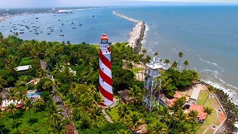
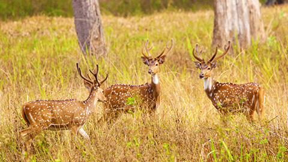
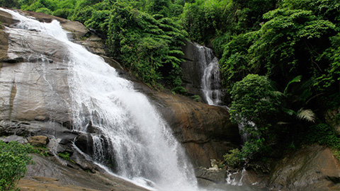
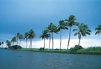
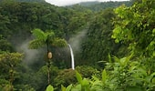
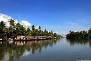
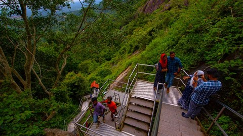
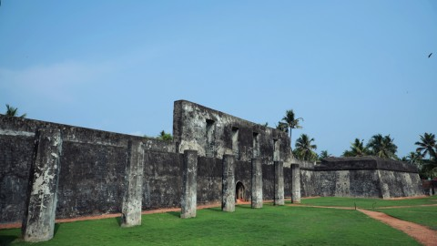
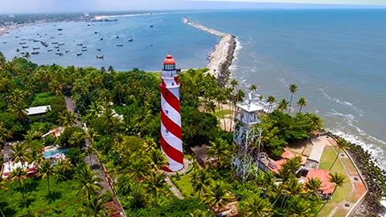
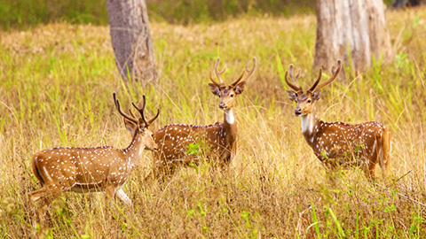
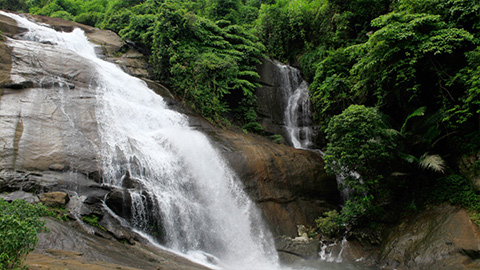
 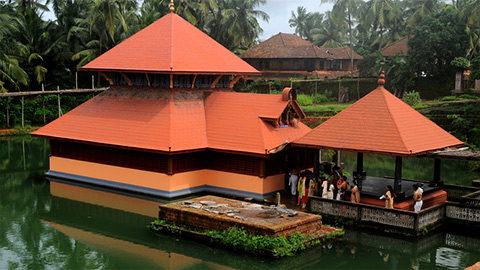
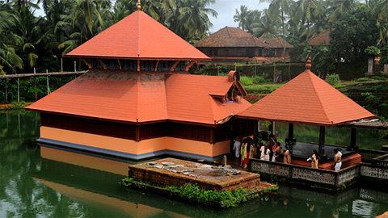
 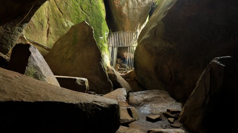
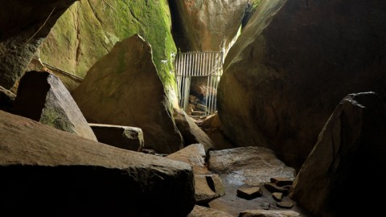

 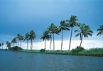
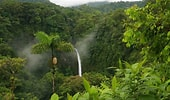
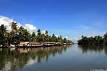
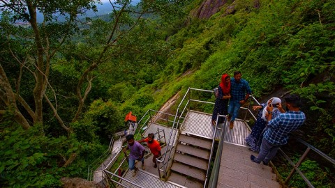
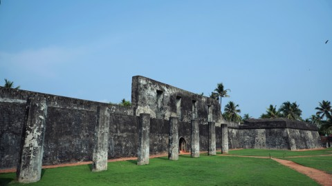
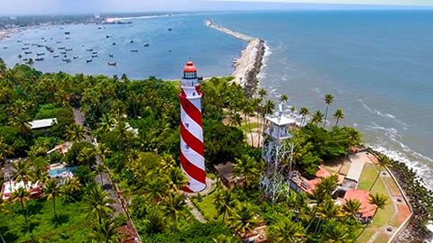
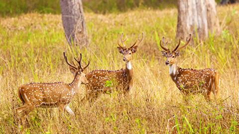
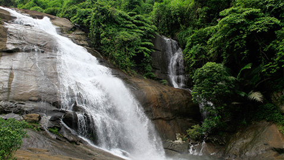
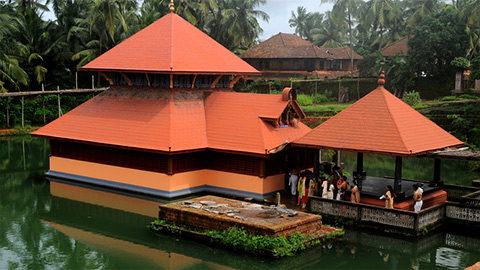
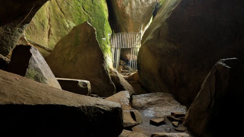
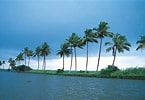
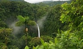
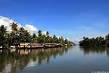
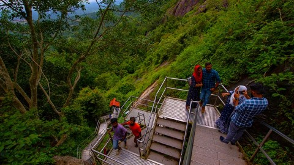
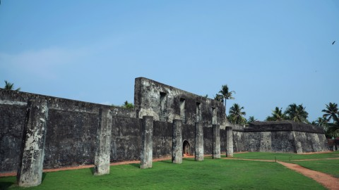
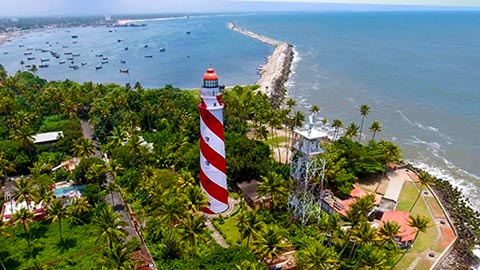
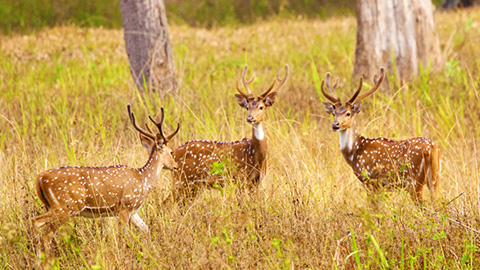
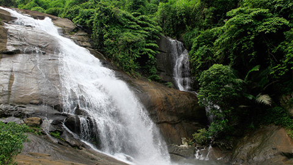
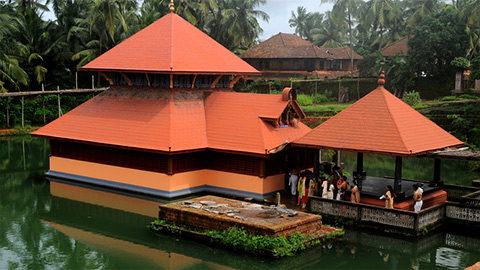
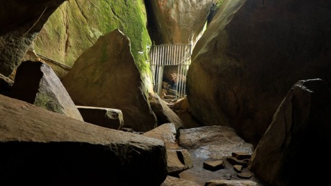
Kerala, a state situated on the tropical Malabar Coast of southwestern India, is one of the most popular tourist destinations in the country. Named as one of the ten paradises of the world by National Geographic Traveler, Kerala is famous especially for its ecotourism initiatives and beautiful backwaters. Its unique culture and traditions, coupled with its varied demography, have made Kerala one of the most popular tourist destinations in the world.. Kerala is a gorgeous South Indian state which has long coastlines and mesmerizing hill stations like Munnar and Alleppey. The country has some exceptional places which can be explored with Kerala tourism. A few top things to do in Kerala are staying in a houseboat, elephant bathing, bird watching, shikara ride, and go for Periyar jeep ride.